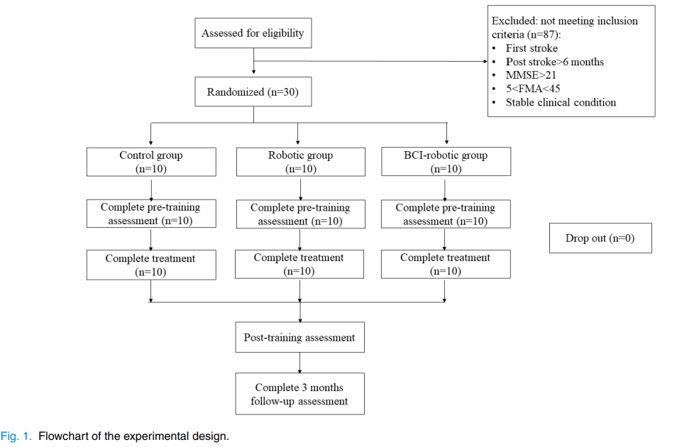
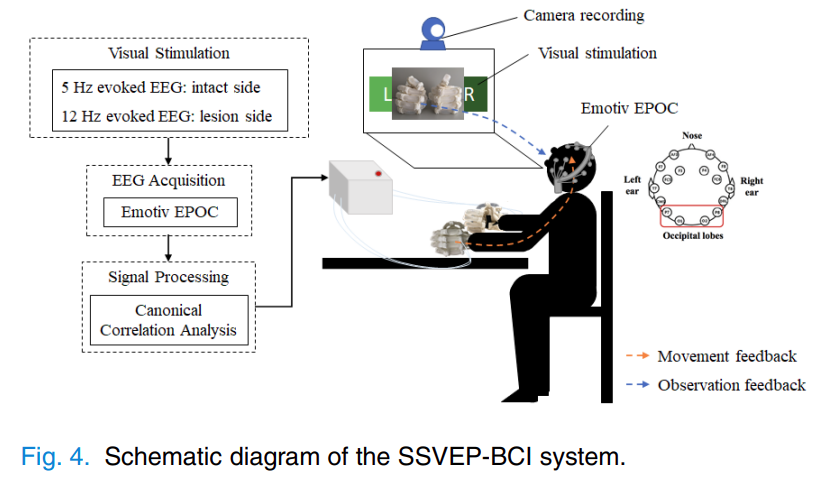

基于SSVEP的脑机接口控制软体机械手套，用于中风后手部功能康复
基于运动想象（MI）的BCI结合机器辅助设备已被证明是一种有效的神经康复工具，可改善卒中后手部功能。缺点是MI-BCI的用户通常需要接受长期培训，且在一开始效果不好。
为提高性能，提出了基于稳态视觉诱发电位（SSVEP）的BCI，用于检测用户意图，以触发软性机器人手套，进行卒中后手部功能康复。
1. INTRODUCTION
-
STROKE是全球最常见的、导致残疾的疾病，也是导致残疾的主要原因之一。手部功能障碍是卒中幸存者中严重的运动功能障碍，导致操纵能力受损，对生活独立性和日常生活活动产生巨大影响。
-
MI基于BCI（MI-BCI）的用户被要求在没有实际动作的情况下想象身体运动，通常是手部或脚部运动的想象。在这种运动想象过程中，运动皮层可以生成相应的脑电图（EEG）活动。运动意图可以通过事件相关去同步（ERD）和事件相关同步（ERS）模式来分类。MI-BCI的用户需要接受长时间的训练，而通常在开始阶段会遭遇不成功和不满意的结果。因此，MI-BCI策略的训练需要大量时间，并且由于对训练策略的解释差异，卒中患者的训练结果各不相同。因此，以前的MI-BCI临床研究通常排除了患有认知障碍的卒中患者。
-
稳态视觉诱发电位（SSVEP）提供了与MI不同的BCI范式，它是通过不同频率的视觉刺激引发的。与MI-BCI在卒中康复中的选择性不同，SSVEP-BCI需要用户接受较少的培训，并允许不同康复阶段和认知状况的卒中患者使用BCI进行康复。由于40%的卒中患者存在认知障碍，为了扩大参与者的资格，SSVEP-BCI是卒中康复的另一种BCI范式。一些研究已经证明了SSVEP在控制机器人设备方面的可行性。然而，关于SSVEP BCI和软性机器人在卒中后手部康复中的应用尚未有报道。
在这项研究中，我们开发了一种由SSVEP-BCI控制的软性机器人手套系统，用于卒中后手部功能康复。通过与传统疗法和机器人手套康复的结果进行比较，评估了开发的系统在康复后和3个月后的临床效果。研究的目的是证明SSVEP-BCI控制的软性机器人手套在卒中后手部功能康复中的实用性和效益。
2. Methods
2.1 被试
所有研究对象均通过签署同意书从医院住院诊所邀请参加研究。
参与者根据以下纳入标准进行招募：
（1）具有足够的认知能力，能够理解实验后续的指导，Mini-Mental State Examination（MMSE）得分>21；
（2）患有中度到严重的上肢运动障碍（上肢Fugl-Meyer评估得分（FMA-UL）在5和50之间）；
（3）单侧脑损伤卒中引起的偏瘫已有超过6个月。
排除标准包括：
（1）修正的Ashworth量表（MAS）>3（严重手部痉挛）；
（2）视野缺陷；
（3）构音障碍、忽视或失语症；
（4）药物滥用、酒精或癫痫病史；
（5）未受控制的医疗问题、沟通中的严重认知障碍或双侧梗死。
从87名中风患者中筛选了30名符合条件的病人。分为三组：BCI组，机器人组和传统对照组
在BCI-机器人组中，记录了受试者BCI准确性的平均值，以评估BCI的性能。
实验流程：

BCI系统范式

屏幕的两侧显示了标有“Left”或“Right”的闪烁方块。刺激频率为12和15 Hz。
BCI记录设备：Emotiv EPOC（Emotiv Inc., San Francisco, CA, USA），具有14个电极和128 Hz的采样率，在本研究中，使用位于P7、P8、O1和O2的四个电极来收集EEG信号。
为了接收来自动作观察和闪烁刺激的信息，参与者被建议观看实时动画和闪烁方块之间的边界。
本研究中CCA分析的窗口长度为3秒，间隔为0.25秒。每个窗口都计算了一个目标频率，但仅当在连续四个窗口中检测到相同的目标时，BCI才会输出控制命令以驱动机器人。
3. Result
3.1 人口特征
- 在年龄、性别、卒中侧、卒中类型和卒中后月份等方面，3组之间没有显著差异。
- 在培训计划开始前对三组进行的临床评估结果如表II所示，三组之间没有显著差异（p > 0.05）
3.2 康复的临床评估
一些指标和术语
- Fugl-Meyer Motor Assessment of Upper Limb (FMA-UL)：Fugl-Meyer 上肢运动评估，用于测量运动功能，一共66分包括
- FMA shoulder/elbow (42/66) ：肩/肘
- FMA wrist/hand (24/66)：腕/手
- Wolf Motor Function Test (WMFT)：沃尔夫运动功能测试，测量活动领域，具有良好的心理测量特性，可进一步支持从活动水平对 FMA 进行评估。
- Modified Ashworth Scale (MAS)：改良阿什沃斯量表，对肘关节、腕关节和掌指关节的改良阿什沃斯量表（MAS）、握力和夹力进行了肌肉痉挛评估。
同一物理治疗师在三个时间点（即训练前、训练后和 3 个月随访）对 FMA、WMFT 和 MAS 进行评估。
培训后（PostT）和3个月后的随访（3 months follow-up，3MFU）时间点上，使用FMA-全身、FMA-肩/肘、FMA-腕/手、MAS-肘部、MAS-腕部、MAS-手指和WMFT进行训练结果评估，结果列在表III中。

统计分析
BCI>Robotics>Control
3.3 BCI-机器人组中的BCI性能
BCI准确性与FMA(full score))改善之间存在显著相关性（r = 0.714，p = 0.032）